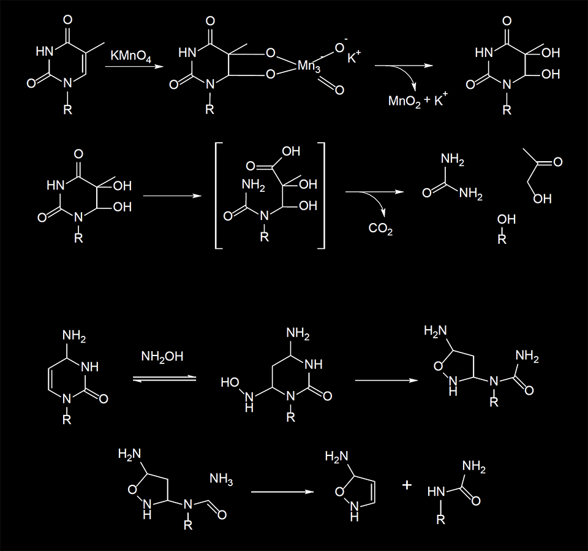
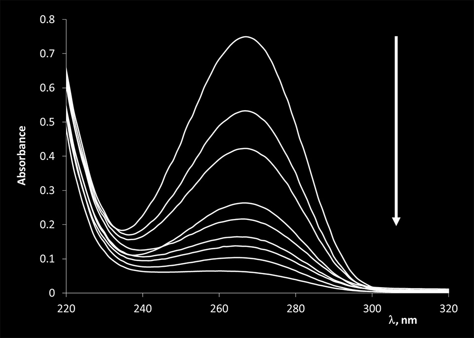
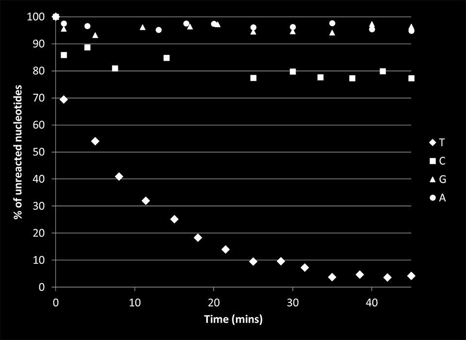
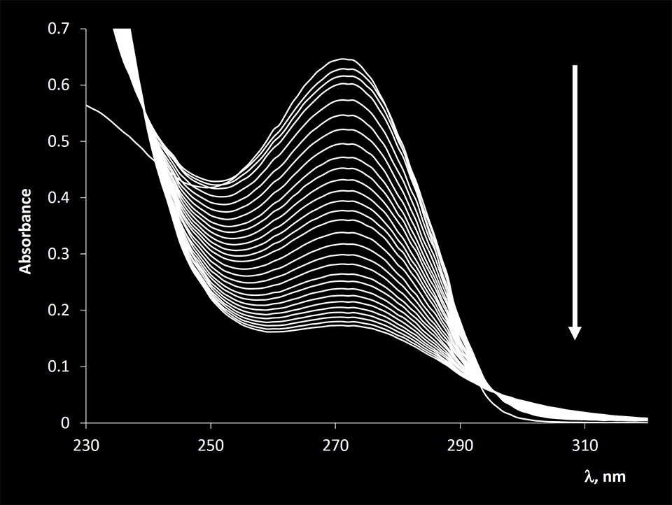
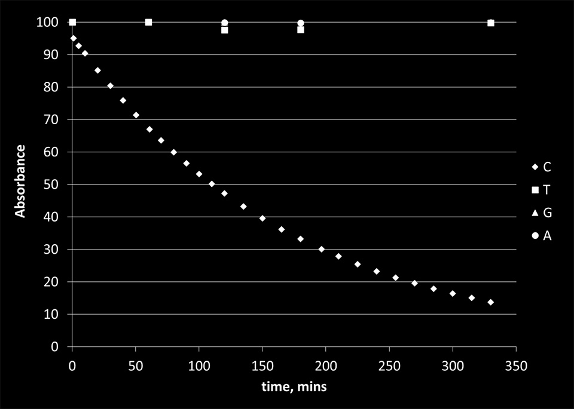
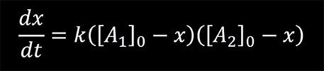
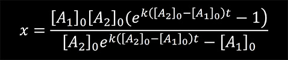
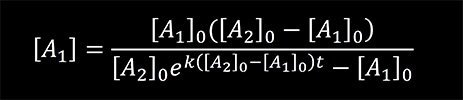
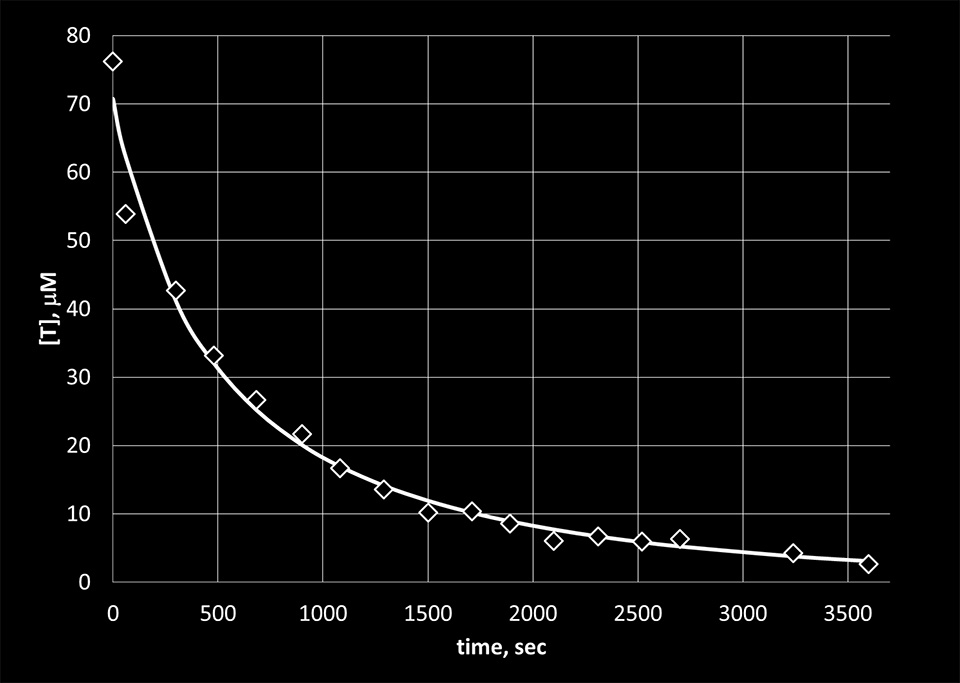
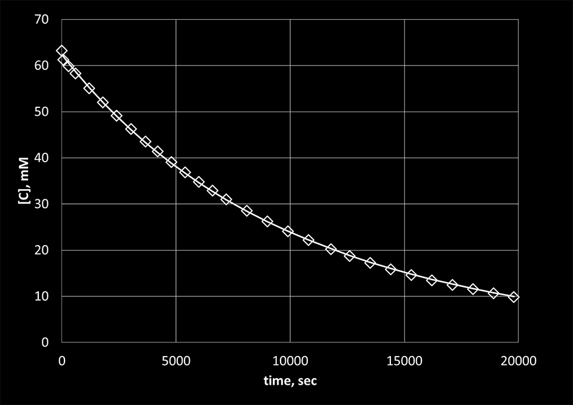

Chemical Cleavage of Mismatches (CCM) is a technique that employs the ability of potassium permanganate (KMnO4) and hydroxylamine (NH2OH) to preferentially react with thymine (T) and cytosine (C) bases, respectively, and open the pyrimidine ring according to the mechanism shown in Figure 1.
In order to optimize the reaction conditions for cleaving the mismatches in DNA molecules immobilized on surface, first, a series of experiments were conducted on four different nucleoside monophosphates in solution. The goal of these experiments was to study the specificity and kinetics of the reactions of KMnO4 and NH2OH with all four nucleobases.
Conjugated aromatic rings in DNA bases absorb light with the maxima in the range between 260 and 280 nm. KMnO4 and NH2OH are expected to break selectively the aromaticity of thymine (T) and cytosine (C) nucleobases, respectively. Hence, one should observe a gradual decrease in absorbance as the corresponding reactions progress. The kinetics of the reactions can be elucidated through monitoring the changes in the absorbance of free nucleoside monophosphates as a function of time.
Hydroxylamine (NH2OH), potassium permanganate (KMnO4), dimethylamine ((CH3)2NH), sodium acetate (CH3COONa), thymidine 5-monophosphate disodium salt hydrate, 2-deoxyguanosine 5-monophosphate sodium salt hydrate, 2-deoxycytidine 5-monophosphate sodium salt, and 2-deoxyadenosine 5-monophosphate were purchased from Sigma-Aldrich and used without further purification. The concentrations of potassium permanganate and hydroxylamine in the reaction mixtures were 0.4 mM and 3.2 M, respectively. For the reactions, nucleoside monophosphates were dissolved in deionized water. Their concentrations were determined from the absorption data using the Lambert-Beer law. Hydroxylamine stock solution was prepared at 4.2 M concentration and pH was adjusted to 6 using dimethylamine. The final concentration of hydroxylamine in the reaction mixtures was 3.23 M. The absorption spectra were recorded on a Cary 50 Bio UV-Vis spectrophotometer (Varian).
The reactivity of hydroxylamine (NH2OH) and potassium permanganate (KMnO4) towards four different nucleoside monophosphates containing thymine, cytosine, adenine, and guanine bases was investigated using UV-Vis spectroscopy. NH2OH and KMnO4 were allowed to react with nucleoside monophosphates for different amounts of time. In the case of KMnO4 the reaction was stopped using 1 M sodium acetate solution (pH 5.2). The absorption spectra of thymidine 5-monophosphate before and after reacting with KMnO4 are presented in Figure 2.
A gradual decrease in the absorption of thymine bases is observed as the reaction of KMnO4 is allowed to proceed for longer periods of time. This observation is consistent with KMnO4 opening the thymidine ring of the base and destroying its aromaticity.
We found little to no effect of KMnO4 on the absorbance of other nucleoside monophosphates. Some reactivity was observed for cytosine. The summary of the results is presented in Figure 3.
NH2OH showed very high specificity towards cytosine (Figure 5). However, the reaction is much slower compared to the reaction of KMnO4 with thymine bases.


For the second order reaction
the rate equation is given by
where k is the rate constant of the reaction, [A1]0 and [A2]0 are the initial concentrations of the reactants, and x is a variable defined as
At time t = 0, [B]0 = 0. Using these initial conditions and integrating the rate equation one can obtain


We used the previous equation to fit the experimental data obtained for the reaction of KMnO4 with thymine and the reaction of NH2OH with cytosine. [A1] in the equation represents the concentrations of the bases calculated from the absorption data using the Lambert-Beer law. The results are presented in Figure 5 and 6. From the fit, the reaction rate constants were determined to be 24.6 M-1sec-1 for the reaction of KMnO4 with thymine and 0.3 M-1sec-1 for the reaction of NH2OH with cytosine.


The obtained results were used to design experiments in more complex systems where each reagent was used to cleave dsDNA by reacting with appropriate bases in strands containing single C-C or T-T mutations. Those experiments are described in next sections.